Photos
Matches 201 to 300 of 435
| # | Thumb | Description | Linked to |
|---|---|---|---|
| 201 | 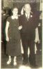 | Jack and Jean Eamer (nee Donohoe) - 1953 Taken at the Midland Town Hall ballroom ... 1953 | |
| 202 | 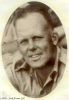 | Jack Eamer Lieutenant (WX33547) in the Australian Army Service Corps | |
| 203 |  | Jack Eamer and Jean Donohoe with their three sons. L-R: Brian Thomas Eamer, Jack Eamer, John Geoffrey Eamer, Jean Ursula Donohoe, Robert Gordon Eamer. | |
| 204 |  | Jack Eamer and Lucy Addis Eamer Brother and Sister, c.1922 | |
| 205 | 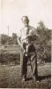 | Jack Eamer with son John - 1949 | |
| 206 | 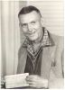 | Jack Thynne | |
| 207 | 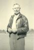 | James "Smith" Dwyer | |
| 208 | 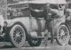 | James Dwyer - Meekatharra 1922 Taken outside the Royal Exchange Hotel | |
| 209 | 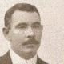 | James Valentine Dwyer Also known as Jim Smith | |
| 210 | 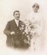 | James Valentine DWYER + Caroline Willows Wedding day | |
| 211 |  | Janet Duncan | |
| 212 | 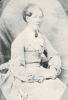 | Janet Duncan Wife of 'Miller Sam' .. arrived Omega 24th May 1852 | |
| 213 | 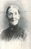 | Janet Duncan wife of Samuel Inglis (Miller Sam) | |
| 214 | 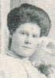 | Janet Inglis head | |
| 215 | Jean Donohoe and sons L-R: Robert Eamer, Jean Donohoe, John Eamer | ||
| 216 |  | Jean Ursula and Olive Donohoe Taken c.1950 -- Melbourne Vic | |
| 217 | Jean Ursula Donohoe On holidays in Melbourne | ||
| 218 | 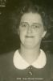 | Jean Ursula Donohoe Taken Midland Junction Town Hall - c.1950 | |
| 219 | 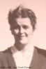 | Jean Ursula Donohoe Taken Melbourne, Victoria c.1950 | |
| 220 | 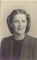 | Jean Ursula Donohoe | |
| 221 | 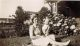 | Jean Ursula Donohoe with son John Geoffrey Eamer .. 1949 | |
| 222 | 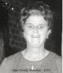 | Jean Ursula Eamer (nee Donohoe) - 1973 Taken 14 July, 1973 and her son John's wedding to Lynnette Dawson | |
| 223 | 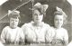 | Jean, Eileen and Olive Donohoe - c.1920 The Donohoe Sisters ... probably taken in Kelleberin, Western Australia, a couple of years after their mother died. The family was split upon her death, the twin boys (Eric and Hugh) being farmed out to relatives in Melbourne, Vic | |
| 224 | 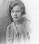 | Jessie SPENCER | |
| 225 | 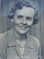 | Jessie SPENCER | |
| 226 | John (Jack) Willows and sister Alice Easter (Essie) | ||
| 227 |  | John and Casey Eamer Taken at Silverdale ... the year and location of the Bush Fire on Xmas day, 2001! | |
| 228 |  | John and Casey Eamer with Michelle Salmon John plays Santa at Casey's school at St Madelein's Primary School during the pre Xmas Arts Festival, 2005 - while Mum watches on. [KC did not know it was her Dad playing Santa!] | |
| 229 |  | John and Elle | |
| 230 |  | John and Elle In Kings Park Perth, Jan 2020 | |
| 231 |  | John and Elle Songkran festival 2019 - ChiangRai, Thailand. | |
| 232 |  | John and Elle Outside the Fremantle Markets, Western Australia Oct 2020 | |
| 233 |  | John and Elle Waiting for a train at the 'Light Rail' station for the Sydney Fish Markets | |
| 234 |  | John and Elle Inside "London Court", Perth, Western Australia - Jan 2020 | |
| 235 |  | John and Elle Songkran festival 2019 - ChiangRai | |
| 236 |  | John and Elle Araluen Botanic Park, Roleystone WA - Jan 2020 | |
| 237 |  | John and Elle Visiting the "Gravity Discovery Centre", Perth, Western Australia - Jan 2020 | |
| 238 | John and Robert (in pram) Freshly bathed and clean dressed!! | ||
| 239 | John Douglas Thynne | ||
| 240 | 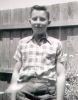 | John Douglas Thynne | |
| 241 | 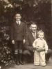 | John Douglas, John Gannon and Michael Eric Thynne | |
| 242 |  | John Eamer - 2012 | |
| 243 |  | John Eamer and Family Taken at Kings Langley Primary School ... Xmas of 1997 | |
| 244 | 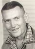 | John Gannon Thynne | |
| 245 | 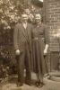 | John Gannon Thynne and Olive Donohoe | |
| 246 |  | John Geoffrey Eamer Taken 11th Feb.,1967 | |
| 247 |  | John Geoffrey Eamer Taken when working for Price Waterhouse & Assoc., in the field at Tutt Bryants .. June, 1868 | |
| 248 |  | John Geoffrey Eamer Taken at Glenhaven, NSW - May 2008 | |
| 249 |  | John Geoffrey Eamer Taken June 2007 | |
| 250 |  | John Geoffrey Eamer First photo . 1949 | |
| 251 |  | John Geoffrey Eamer Sales Representative | |
| 252 |  | John Geoffrey Eamer Growing up - 1960 | |
| 253 |  | John Geoffrey Eamer First Fancy Dress | |
| 254 |  | John Geoffrey Eamer School shot 1957 | |
| 255 |  | John Geoffrey Eamer Wheat Bin Attendant | |
| 256 |  | John Geoffrey Eamer School shot 1958 | |
| 257 |  | John Geoffrey Eamer 68 yrs | |
| 258 |  | John Geoffrey EAMER - 2010 | |
| 259 |  | John Geoffrey Eamer - Lynette May Dawson Taking a break after doing some trail riding! | |
| 260 |  | John Geoffry Eamer and Michelle Susan Salmon Taken in Templestowe Melbourne ... Ray Nott's 40th birthday celebration. | |
| 261 |  | John William Eamer Taken Meekatharra, WA - 1906 | |
| 262 |  | John William Eamer Taken Meekatharra, WA - 1925 | |
| 263 |  | John William Eamer Taken outside the Meekatharra Roads Board Office, c.1905 | |
| 264 |  | John William Eamer and Lucy Willows Wedding: Nannine, Western Australia - 31st July 1905 | |
| 265 |  | John Willows | |
| 266 |  | John Willows Postcard Photo taken 1919 | |
| 267 |  | John Willows | |
| 268 |  | John Willows with wife Mavis - Perth April 1967 L-R: Josephine Dwyer, Mavis Shirley, Caroline Willows, Nancy Dwyer and John Willows. | |
| 269 | 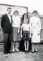 | John, Judith, Michael and Elaine Eileen Donohoe - Sister Margaret Mary at the rear | |
| 270 | 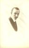 | Joseph John TOVEY | |
| 271 | 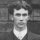 | Joseph Tate | |
| 272 | 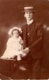 | Joseph Tate and half sister Eileen Rumbold Taken from a postcard that reads: To Cousin Essie from Joe and Eileen Aug 23 1909 | |
| 273 | Josephine Marie Dwyer Taken at Kardinya, WA - March 2008 | ||
| 274 |  | Josephine Marie Dwyer and daughter Jennifer Marie Davies Taken Nedlands, April 2008 | |
| 275 |  | Joyce Gade and son Robert | |
| 276 | Judith Anne Thynne | ||
| 277 |  | Judith Roberts with daughter Kelsey Gade Taken May 2006 - Melbourne, Victoria | |
| 278 | 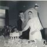 | Judith Thynner marries Peter Walshe | |
| 279 | 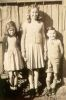 | Judith, Elaine and John Thynne | |
| 280 | 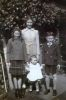 | Judith, Elaine, John and baby Micheal Thynne | |
| 281 | 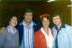 | Judith, John, Elaine and Michael Thynne | |
| 282 | Karlena Lewis | ||
| 283 | Karlena Marie Lewis Taken Kardinya, WA - March 2008 | ||
| 284 | Kelsey Gade Taken Aug 2006 | ||
| 285 |  | Laura Gade and her mother Martha Kuhn | |
| 286 |  | Lorraine Lucy and Helen Margaret Beer Taken at the Perth Royal Show 1952 | |
| 287 | Lorraine Lucy and Helen Margaret Beer Taken c.1953 | ||
| 288 | Lorraine Lucy Beer Taken Kardinya, WA - March 1980 | ||
| 289 | 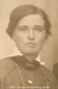 | Louisa Bertha Mary Eamer Taken Perth, WA - c.1925 | |
| 290 | 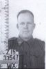 | Lt Jack Eamer WX 33547 | |
| 291 | Lucy Addis EAMER Taken c.1921 | ||
| 292 | 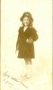 | Lucy Addis Eamer Taken c.1920 | |
| 293 | 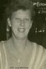 | Lucy Addis Eamer Taken in Forrest Place, Perth, WA - c.1950 | |
| 294 | Lucy Addis Eamer March 1997 | ||
| 295 | 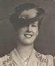 | Lucy Addis Eamer | |
| 296 |  | Lucy Addis Eamer and Edward Bourne Hunter Wedding day, 1969 | |
| 297 |  | Lucy Addis Eamer and Jean Ursula Donohoe Taken in Forrest Place, Perth c.1950 | |
| 298 |  | Lucy Addis Eamer and William Beer Taken c.1955 | |
| 299 | 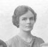 | Lucy SPENCER | |
| 300 | 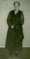 | Lucy Willows Taken Perth, WA c.1956 |